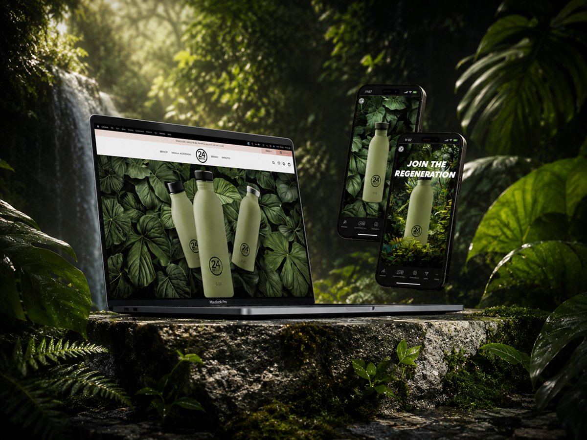
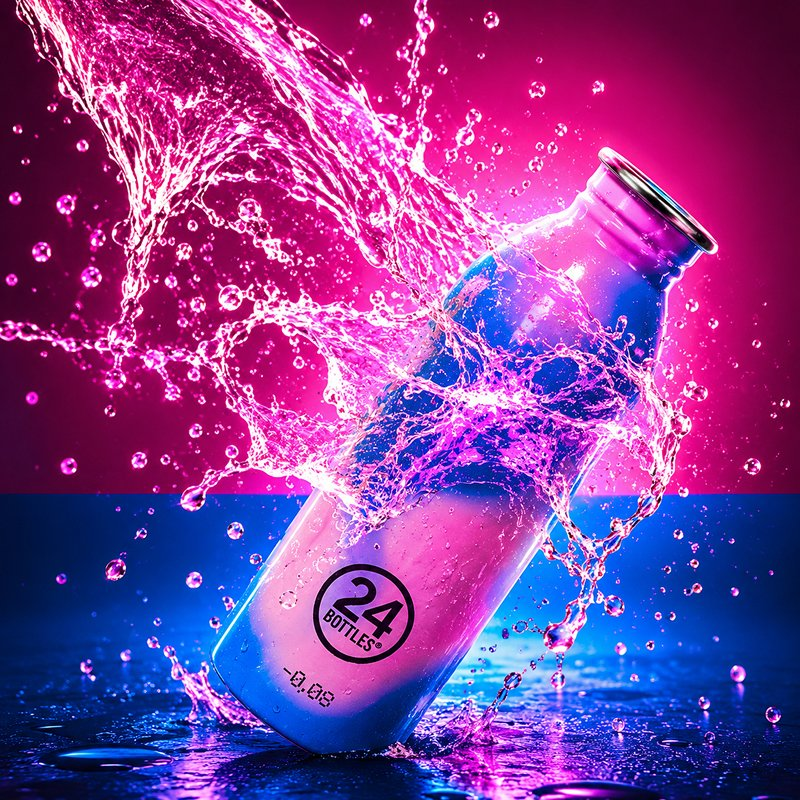
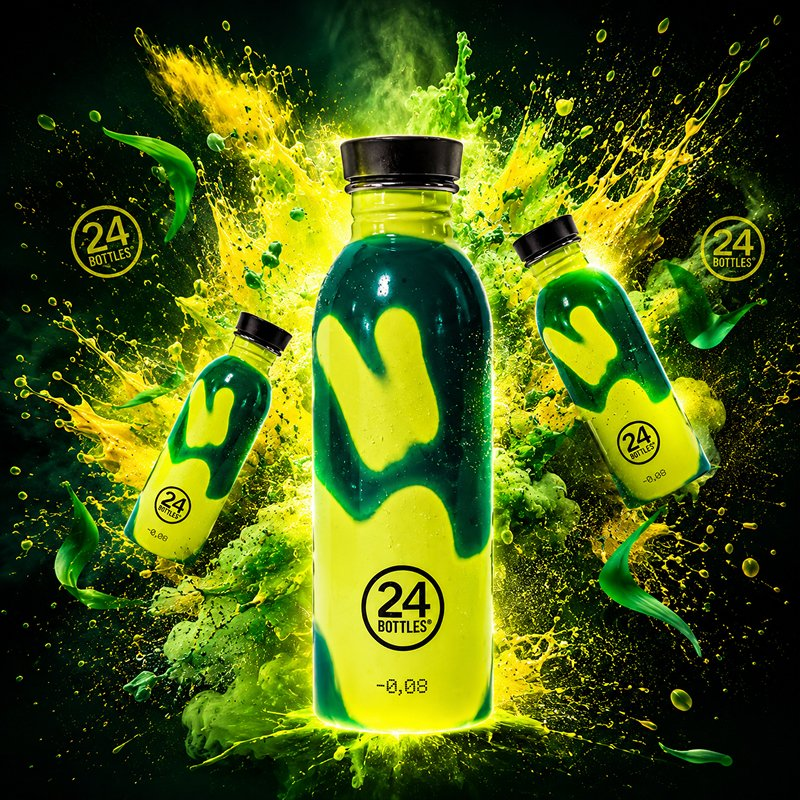
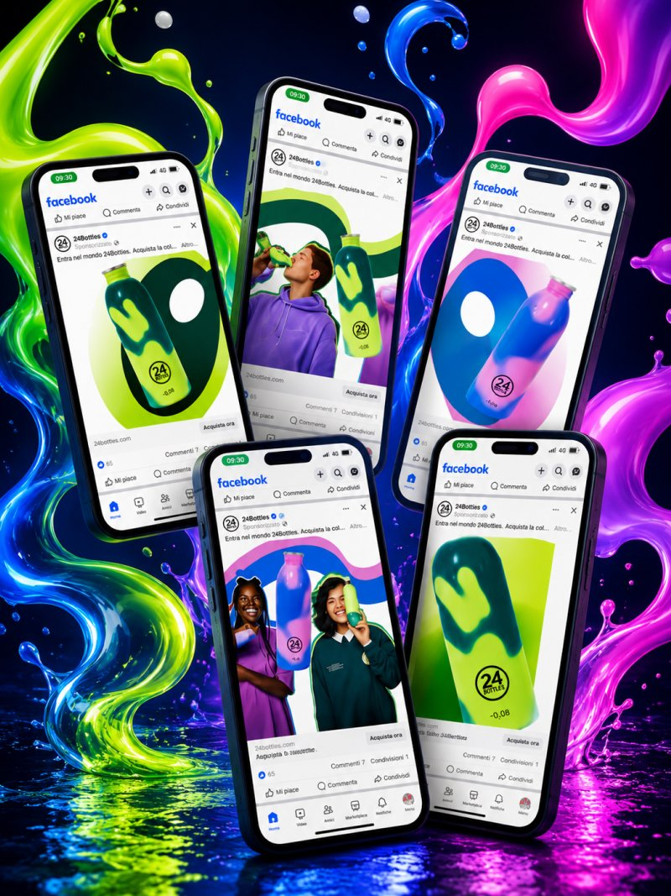
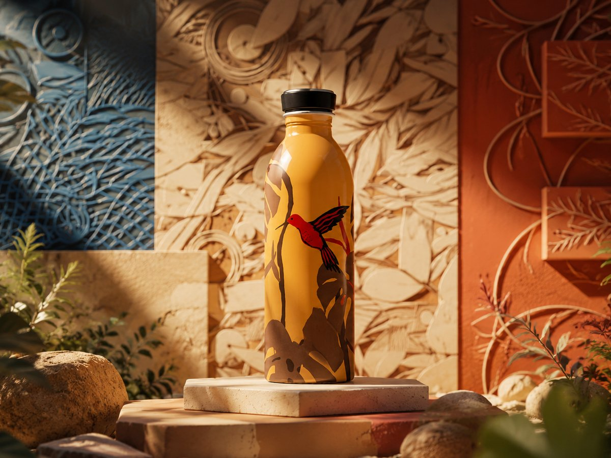
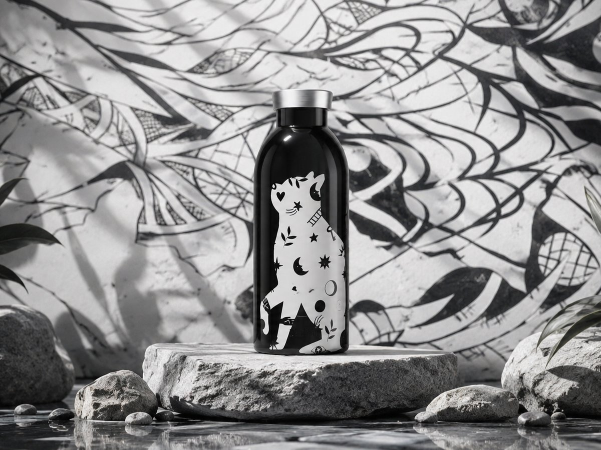
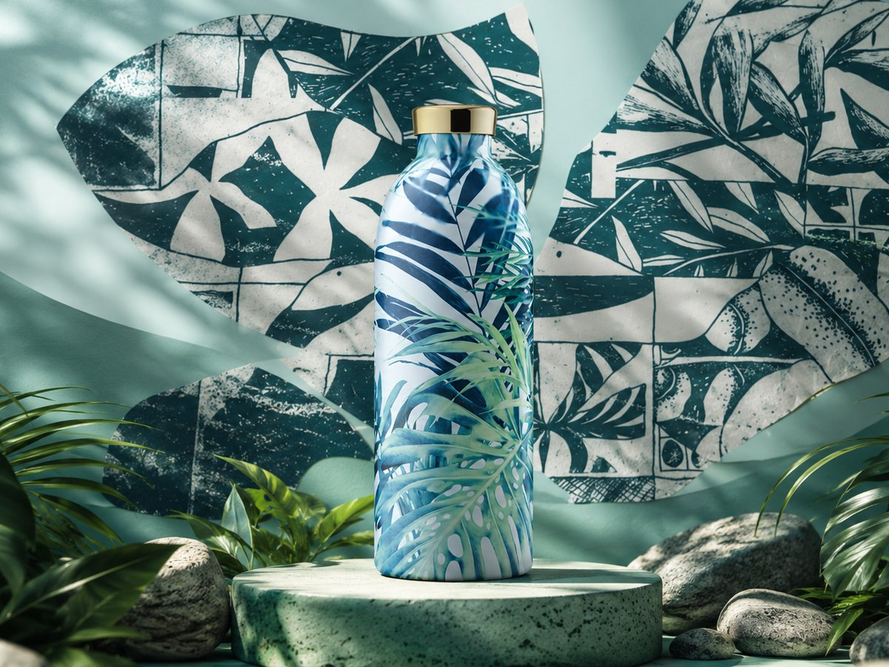

24 Bottles
Social media communication and content creation

A design test that became a real project.
This work was born as a selection test for the Graphic and Visual Designer role at 24 Bottles — a Bologna company focused on sustainability products. I reached the in-house test as the only candidate. The brief required two distinct campaigns: one on sustainability, one on the launch of ReAct, a new line with temperature-reactive paint.
The project didn't generate a job offer — it generated work I'm proud of.
"The bottle as pop icon. First a still life à la Andy Warhol, then a superhero in a comic saving the world from the waste catastrophe."






ReAct — when the product is already the communication
ReAct is a line of bottles with temperature-reactive paint — the colour changes based on what you put inside. The campaign visual didn't need to explain the technology: it had to show it.
The challenge was making visible something that only exists in the moment of use — a product that tells its own story if you look at it at the right moment.



